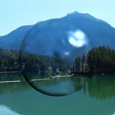

Omino Glass

Salamin na gawa sa liwanag ng layer: nire-refract ang nasa likod nito na may rainbow fringes at nililiwanagan ang ibabaw na parang lens.
Mga Setting
| Setting | Uri | Saklaw | Default |
|---|---|---|---|
| Bevel | Numero | 0 px hanggang 300 px | 10 px |
| Refraction | Numero | -100 px hanggang 100 px | 5 px |
| Chromatic aberration | Numero | -100 px hanggang 100 px | 5 px |
| Laki ng feature | Numero | 5 hanggang 500 | 100 |
| Mga sample ng smoothing | Numero | 1 hanggang 20 | 2 |
| Kulay | Kulay | – | #FF5566 |
| Blend | Numero | 0% hanggang 100% | 0% |
| Shading | Pagpipilian | Wala, Point light, Directional light | Point light |
| Tindi | Numero | 0% hanggang 200% | 100% |
| Kinang | Numero | 0 hanggang 1 | 0.8 |
| Specularity | Numero | 1 hanggang 250 | 30 |
| Ambient | Numero | 0 hanggang 1 | 0.1 |
| Kulay ng Ilaw | Kulay | – | #FFFFFF |
| Direksyon | Punto (X, Y) | -5000 px hanggang 5000 px | 75 px, -75 px |
| Elevation | Numero | -100 hanggang 800 | 100 |
| Gamitin ang Luminance ng Layer | Naka-on o naka-off | – | Naka-on |
| Roughness | Numero | -100% hanggang 100% | 0% |
| Roughness Scale | Numero | 0.01 hanggang 50 | 1 |
| Evolution | Numero | -50 hanggang 50 | 0 |
| Seed | Numero | 0 hanggang 5 | 0 |